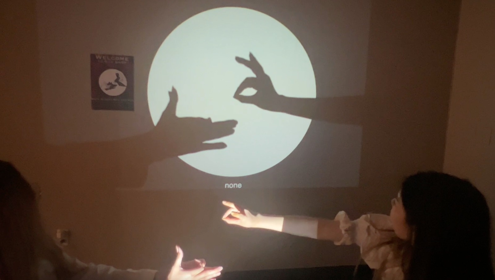
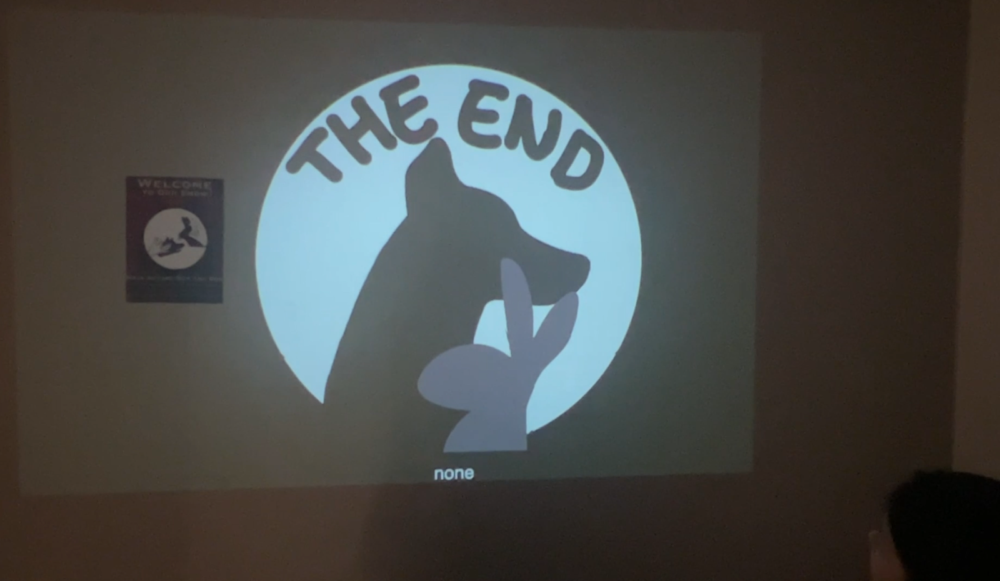

Our Shadow Puppet Show
Crystal Zhou, 2025
Our Shadow Puppet Show lets viewers bring hand shadow puppets to life, triggering animated scenes that explore play, memory, and imagination.



Our Shadow Puppet Show lets viewers bring hand shadow puppets to life, triggering animated scenes that explore play, memory, and imagination.


This interactive installation is inspired by childhood memories of making hand shadow puppets. Viewers use their hands to form shadows that trigger animated scenes, turning simple gestures into a playful narrative experience.
The project focuses on two puppets, a bunny and a dog, guided by a poster that shows how to form each shape. A camera detects the shadow and plays a corresponding scene: the bunny pulling a carrot, the dog chasing a ball, or both appearing together. When two participants collaborate to form both puppets, a final scene unfolds in which the characters interact and become friends.
The work encourages shared play and explores how memories and imagined scenes can be activated through simple physical actions. The visuals are designed to feel universal, drawing from familiar childhood imagery. Everything was designed and animated in Procreate.
Skills: Teachable Machine, HTML, JavaScript, Procreate
I built this installation using the Teachable Machine, HTML, and JavaScript. I trained a model to detect hand shadow puppets by recording only the shadow shapes for better accuracy, then exported it to use in JavaScript to trigger the corresponding visual scenes.